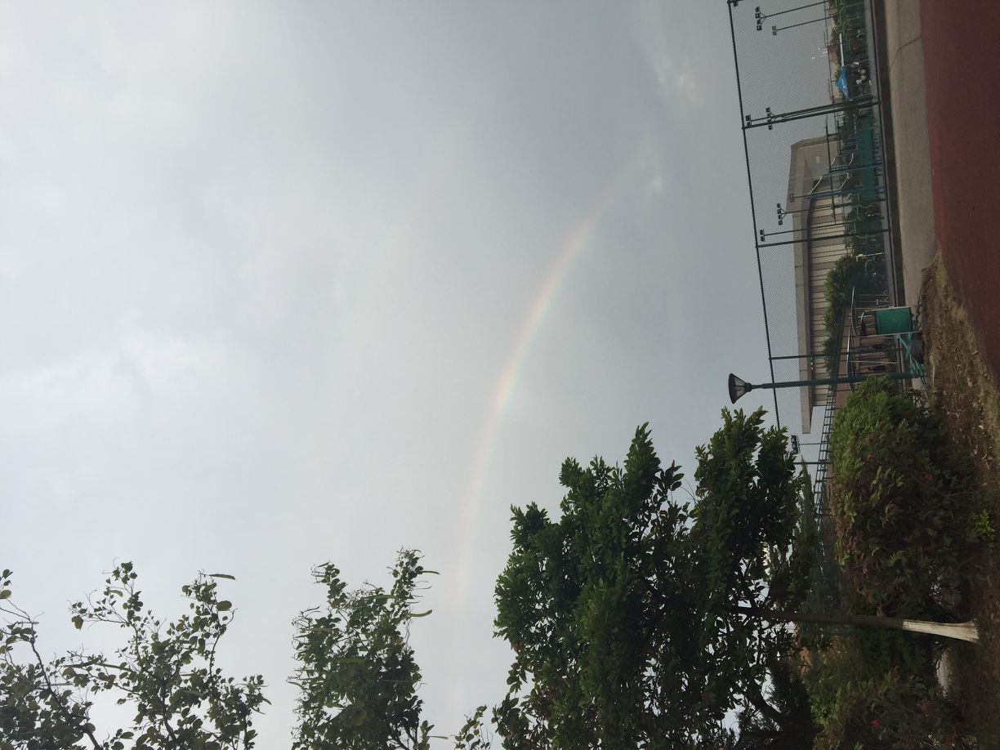

Junior
School of Data and Computer Science
Sun Yat-sen University
Email:xiex27[at]mail2.sysu.edu.cn
I'm a Junior at the School of Data and Computer Science, Sun Yat-sen University.
My research interests include machine learning in Defect Prediction, Network system
Advisor: Dr. Qinghua Liu
Topic: Machine Learning for Placement
May 2017 - Sep. 2017, San Jose, CA
Advisor: Prof. Bei Yu
Topic: Standard Cell Synthesis
Mar. 2016 - May 2016, NT, Hong Kong
| CUHK Postgraduate Studentship | 2016- | |
| National Encouragement Scholarship | 2013-2015 | |
| First Class Outstanding Student Scholarship of SYSU | 2013-2015 | |
| Merit Student of SYSU | 2013-2015 |
2018 Spring: CSCI5010 – Practical Computational Geometry Algorithms
2017 Fall: CENG4480 – Embedded System Development and Applications
2017 Spring: CSCI5160 – Approximation Algorithms
2016 Fall: CENG4480 – Embedded System Development and Applications